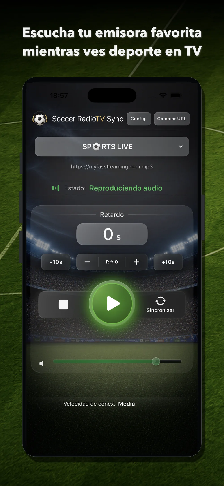
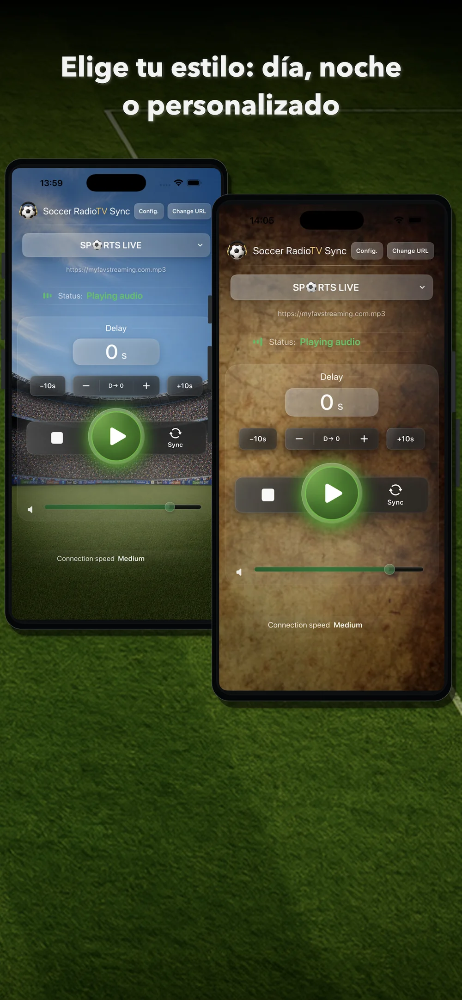
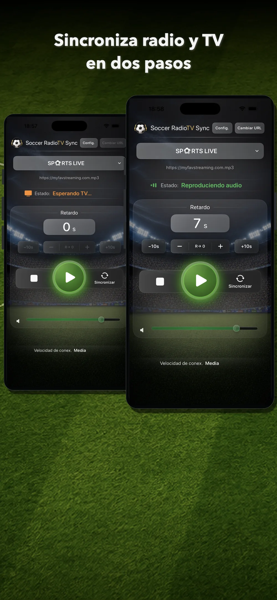
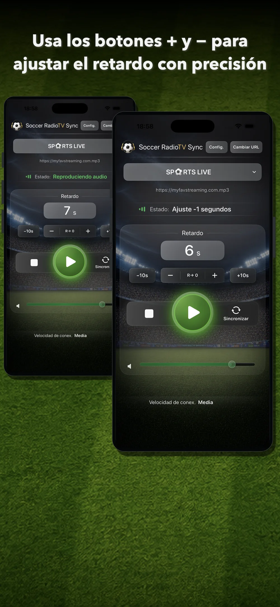
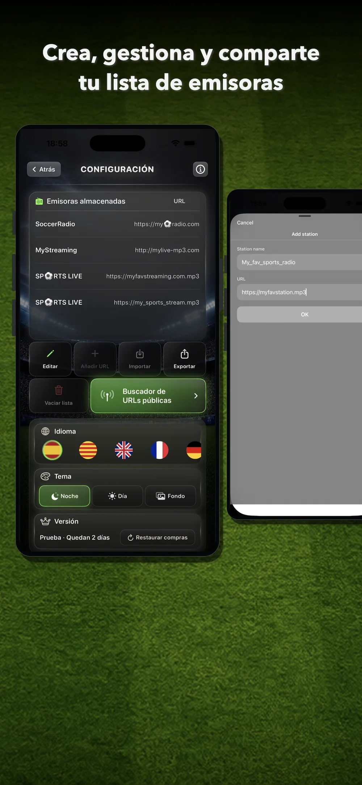
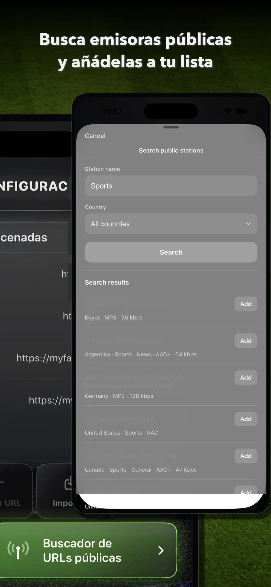

Elige una emisora
Selecciona una emisora guardada, añade un stream compatible o cambia entre las URLs de una misma emisora.
Soccer RadioTv Sync te permite escuchar la narración de radio que elijas, sincronizada con la imagen de televisión mientras ves fútbol y otros deportes.
Está diseñada especialmente para ver deporte en TV por streaming, donde la imagen puede llegar más tarde que la radio online. Ajusta el retardo de la radio desde tu iPhone y recupera la experiencia clásica del partido: verlo en televisión mientras escuchas la narración que más te gusta.

Descubre emisoras públicas, añade tus propias URLs y sincroniza la radio con la imagen de TV. Después de la prueba, desbloquea Premium para siempre con una compra única.
Soccer RadioTv Sync 2.0 estrena una interfaz más visual, moderna y clara. La idea original sigue siendo la misma: retrasar la radio para hacerla coincidir con la imagen. Ahora es más fácil añadir fuentes mediante el buscador público de emisoras, la reproducción empieza antes después de pulsar Play, se ha mejorado la selección de emisoras y puedes personalizar el aspecto de la pantalla principal.

La pantalla principal reúne lo esencial: emisora activa, URL actual, estado de reproducción, valor del retardo, controles de ajuste, botón Sincronizar, volumen y velocidad de conexión.
Selecciona una emisora guardada, añade un stream compatible o cambia entre las URLs de una misma emisora.
Inicia el audio y sincronízalo con la imagen de TV cuando ocurra un momento reconocible.
Usa +, –, +10s y –10s para corregir el retardo sin interrumpir el partido.

Pulsa Sincronizar cuando escuches un momento reconocible en la radio. Cuando veas ese mismo momento en la televisión, vuelve a pulsar Sincronizar. La app calcula el retardo y ajusta la reproducción para hacer coincidir la radio con la imagen. Después puedes afinar el resultado con + y –.
Usa + y – para corregir cualquier pequeño desfase entre el sonido y la TV mientras continúa el partido. Utiliza +10s y –10s cuando necesites cambios más rápidos. Para empezar de nuevo, restablece el retardo a cero con R→ 0.

Añade emisoras a través del buscador o manualmente, y configura tu propia lista. Gestiona el orden de las emisoras y sus servidores. Exporta tu lista como copia de seguridad o compártela con tus amigos.


Busca emisoras de radio públicas mediante un buscador integrado basado en Radio Browser.
Te permite agregar las retransmisiones de creadores o narradores que solo emiten por streaming.
Alterna entre servidores de la emisora pulsando "Cambiar URL".
En la versión 2.0, después de pulsar Play, la emisora comienza antes y la app se siente más rápida y directa.
Utiliza el modo Día, el modo Noche o un fondo personalizado en la pantalla principal.
Sin suscripción, sin anuncios, sin cuenta obligatoria y sin recopilación de datos personales.
Prueba la app con tu TV, tu emisora y tu forma de ver deporte antes de decidir.
Desbloqueo Premium con una compra única después de la prueba. Sin suscripción. Los compradores anteriores reciben Premium automáticamente.
Premium desbloquea toda la experiencia de Soccer RadioTv Sync después de la prueba.
Soccer RadioTv Sync nació de una situación muy concreta: su creador, aficionado al fútbol desde pequeño, quería seguir viendo los partidos en televisión mientras escuchaba a su comentarista de radio favorito. Con la llegada de la televisión por streaming, la imagen empezó a llegar con retraso respecto a la radio; los goles se escuchaban antes de verse, lo que arruinaba la experiencia. Al no encontrar una forma sencilla de resolverlo, desarrolló una primera aplicación muy básica en un MacBook de 2013. Reproducía una única emisora, pero su núcleo de sincronización permitía retrasar el audio para sincronizarlo con la imagen de TV. Buscando en foros y redes descubrió que era un problema comentado por muchos aficionados de diferentes países. La app no podía quedarse en un mero prototipo. A partir de aquel núcleo de sincronización nació la versión para iPhone de Soccer RadioTv Sync: una aplicación indie diseñada especialmente para disfrutar las retransmisiones deportivas como antes, adaptada a la era del streaming.
Permite escuchar un stream de radio online compatible sincronizado con la imagen de TV mientras ves deporte, especialmente cuando la TV por streaming llega más tarde que la radio online.
La app permite buscar emisoras públicas mediante un buscador integrado basado en Radio Browser. También puedes añadir manualmente tus propias URLs compatibles.
Puedes usar streams de audio online compatibles. Algunas emisoras, narradores, creadores y servicios ofrecen streams que pueden añadirse manualmente si son compatibles con el sistema de reproducción de la app.
Puedes probar otra URL o servidor de la misma emisora. Los distintos servidores pueden tener latencias diferentes.
No. No necesitas crear ninguna cuenta.
No. La app ofrece una prueba gratuita de 7 días y después un desbloqueo Premium vitalicio mediante una compra única.
Los compradores anteriores reciben Premium vitalicio automáticamente.
Ese es el escenario principal. En la TV por streaming, la imagen puede llegar más tarde que la radio online y la app puede retrasar la radio para sincronizarla con la imagen.
Con la TDT o el satélite, los tiempos pueden ser diferentes porque la imagen puede llegar antes que la radio online. Soccer RadioTv Sync está pensada principalmente para situaciones en las que hay que retrasar la radio para hacerla coincidir con una imagen de TV que llega más tarde.